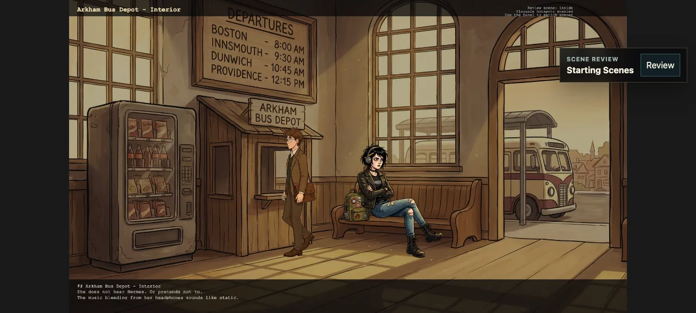
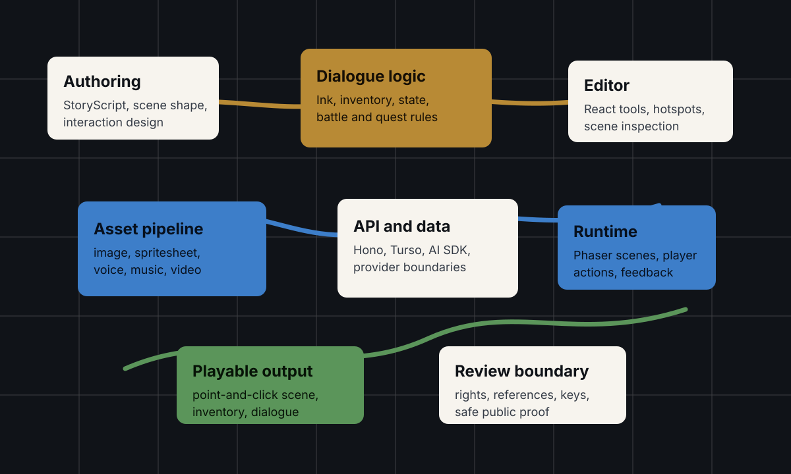

Problem
A point-and-click adventure splits across writing, scene logic, character art, dialogue, inventory, runtime code, and testing — usually seven tools and a lot of glue. Anima collapses that into one system: author the story and interactions, generate the art, and get a scene you can actually play, with a review layer that catches placement and perspective bugs before they ship.
What I Built
Anima is built on StoryScript, a language I designed for point-and-click adventures, wrapped in a Phaser runtime, React tooling, a Hono API, Turso persistence, and an AI asset pipeline that produces characters, backgrounds, and spritesheets. The authoring side defines scenes, hotspots, dialogue, and inventory in StoryScript; the runtime turns them into a walkable point-and-click scene. Shadow Over Innsmouth is the game I built on top to prove the whole loop end to end.
- LanguageStoryScript — my own DSL for scenes, hotspots, branching dialogue, and inventory.
- RuntimePhaser scenes, walkable characters, hotspot interaction, scene transitions.
- Art pipelineAI-generated characters and backgrounds, cut out with a difference matte and QC'd into spritesheets.
Built on StoryScript
The authoring layer runs on StoryScript, a plain-text language I designed for point-and-click adventures — scenes, hotspots, dialogue, and inventory written like a screenplay, with a headless engine that runs and validates the story before any art exists. Every scene in Shadow Over Innsmouth is authored in it (about 6,500 lines across four acts), and Anima is one UI drawing what that engine emits. It is its own project: see the StoryScript case study.
System Shape

The Art Pipeline
Characters start as AI-generated motion, then get processed into game-ready spritesheets. Nothing is hand-placeholdered — the pipeline is the production line.

How the cutout actually works
Getting a clean transparent sprite out of AI video is the hard part, and the interesting decision is how. A generated walk cycle sits on a flat backdrop; the naive approach is background removal, but that fights skin tones against grey and leaves halos. So the pipeline uses a difference matte instead: it re-renders each frame twice with an image model — once on pure white, once on pure black — then reads the two side by side. A pixel that looks identical on both is the character (keep it opaque); a pixel that swings all the way from white to black is background (make it transparent). Because the model separates character from background semantically before the math runs, the alpha is pixel-perfect where a chroma-key would smear.
From there it is local tooling: decode the transparent video with the VP9 alpha decoder (the default one silently flattens it), scan for the frame where the walk loops seamlessly, trim every frame to one global bounding box so the character does not jitter, and pack the result into a Phaser spritesheet with JSON metadata the runtime loads directly. The magenta and blue backgrounds in the clips above are just that transparency previewed against a colour that makes stray pixels obvious.
Technical Decisions
- Design a purpose-built language (StoryScript) instead of a JSON schema or an off-the-shelf engine — plain text that an LLM can write, a human can read, and the runtime executes directly with no compile step.
- Separate authoring primitives from runtime behavior, so a scene can be edited and played from the same source of truth.
- React for tooling, Phaser for execution — each framework does the job it is good at instead of one doing both badly.
- Treat AI as a production pipeline, not a chat box bolted onto the game — and extract alpha with a white/black difference matte instead of background removal, so skin tones on a grey backdrop come out clean.
- Build a real game (Shadow Over Innsmouth) to validate the system, rather than shipping an abstract engine with no proof it holds up.
- Verify scenes in a local browser harness — movement, perspective scale, hotspot coverage, and door transitions get checked against the running game.
What This Proves
Anima is the part of the portfolio that is hardest to fake: taste and system design in one place. It joins creative direction, authoring UX, full-stack implementation, runtime engineering, and an AI art pipeline into something you can sit down and play.
Public Evidence
- Two authored scenes shown running in the Anima editor.
- The art pipeline's difference-matte and QC step on an original character sprite.
- StoryScript parser and scene verifier pass locally.
- Shadow Over Innsmouth builds and runs; the scene verifier checks movement, scale, and transitions.
- Full playable walkthrough and the authoring tools available on request.
Review Boundary
Characters, art, and setting shown here are original or public-domain. Unreleased story text, generated voices, provider configuration, and API keys stay private.